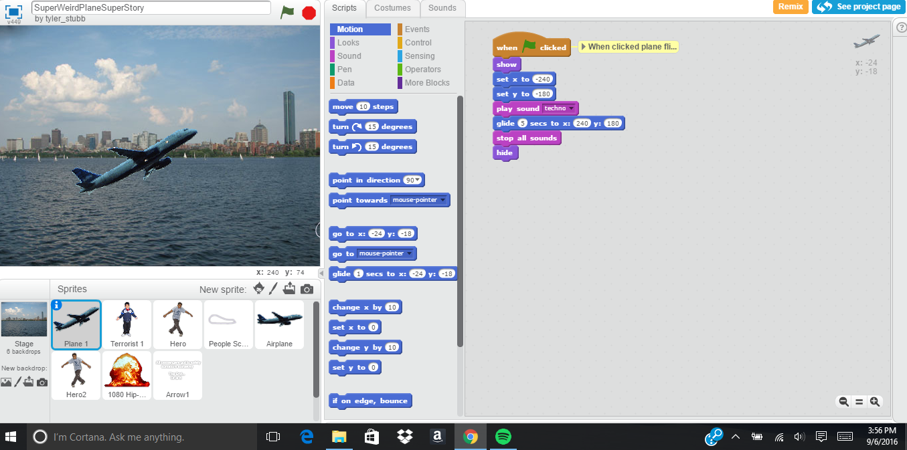

Above is Activity 1.1.7. Tyler Stubblefield and I made it using the program, "Scratch." It's a very funny story about a villian and a superhero. This is not to be offense to anyone of any race, religion, etc.
Above is Activity 1.1.7. This is our excel spreadsheet, it shows all the planning we did.
Above is a Statistics Interactive Program I made with my partners Alex Lill and Justin Harsono.
Above is the flow chart I used to create the Statistics Program with Alex Lill and Justin Harsono. IMPORTANT NOTE: Please open this in google chrome only as internet explorer does not work with this.